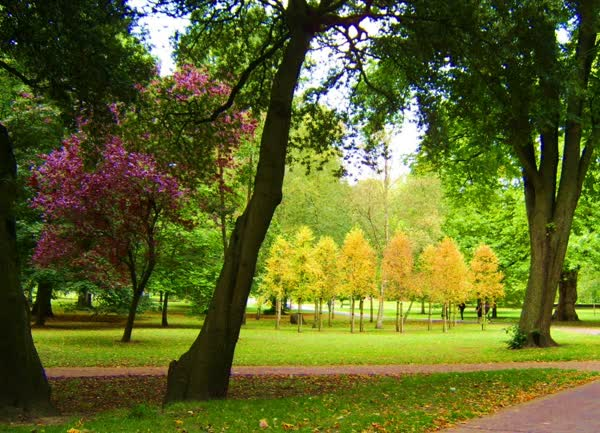

Conversão simples
ffmpeg -i [input] [saida]
Recorte de tempo
//copia 30s a partir do segundo 10
ffmpeg -i [inputfile] -ss 00:10 -t 00:30 [outputfile]
mp4 qualidade [ 0 = ótimo , 20 padrão , 100 = ruim]
ffmpeg -i [inputfile] -crf 16 [outputfile]
Qualidade de áudio [ 320k , 256k , 128k ]
ffmpeg -i [inputfile] -b:a 320k [outputfile]
Vídeo bitrate
ffmpeg -i [inputfile] -b:1000k [outputfile]
Volume + ou - / Canais
ffmpeg -i [inputfile] -filter:a "volume=2" [outputfile]
ffmpeg -i [inputfile] -filter:a "channelmap=0-0|0-1" [outputfile]
Cortar [w:h:x:y]
ffmpeg -i [inputfile] -filter:v "crop=w=100:h=200:x=100:y=100" [outputfile]
Tamanho [w:h] [ -1 para mater proporção]
in_w = largura
in_h = altura
ffmpeg -i [input] -filter:v "scale=200:300" [output]
ffmpeg -i [input] -filter:v "scale=200:-1" [output]
 -
Rotação [ 1=90 , 2=180 , 3=270 , 4=360 ] [ angulo*PI/180 ]
ffmpeg -i out3.mkv -vf "transpose=1" rotate.mp4
ffmpeg -i [input] -filter:v "rotate=30*PI/180" [output]
ffmpeg -i [input] -filter:v "rotate=30*PI/180" [output]